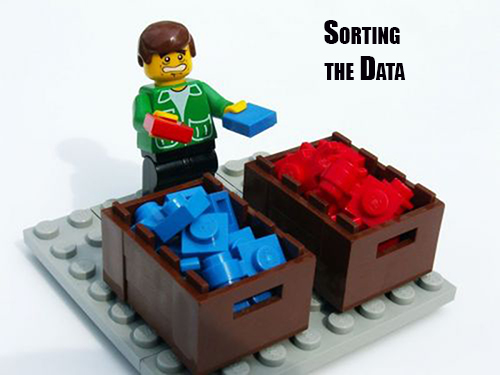
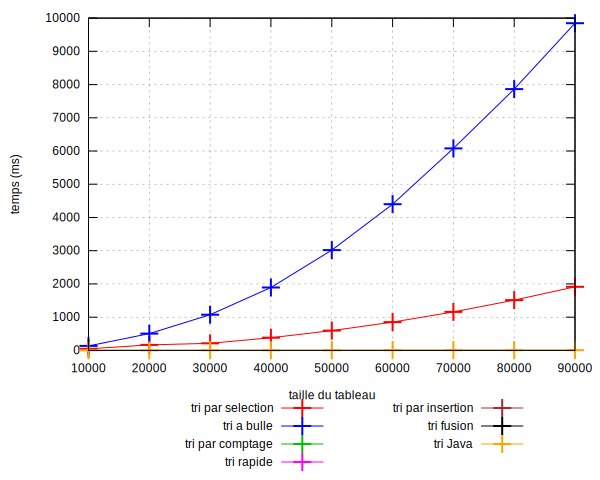
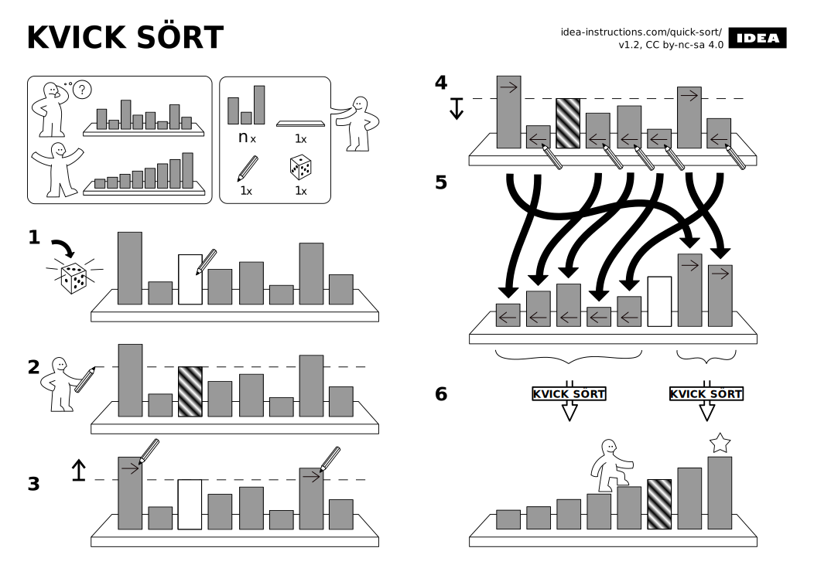
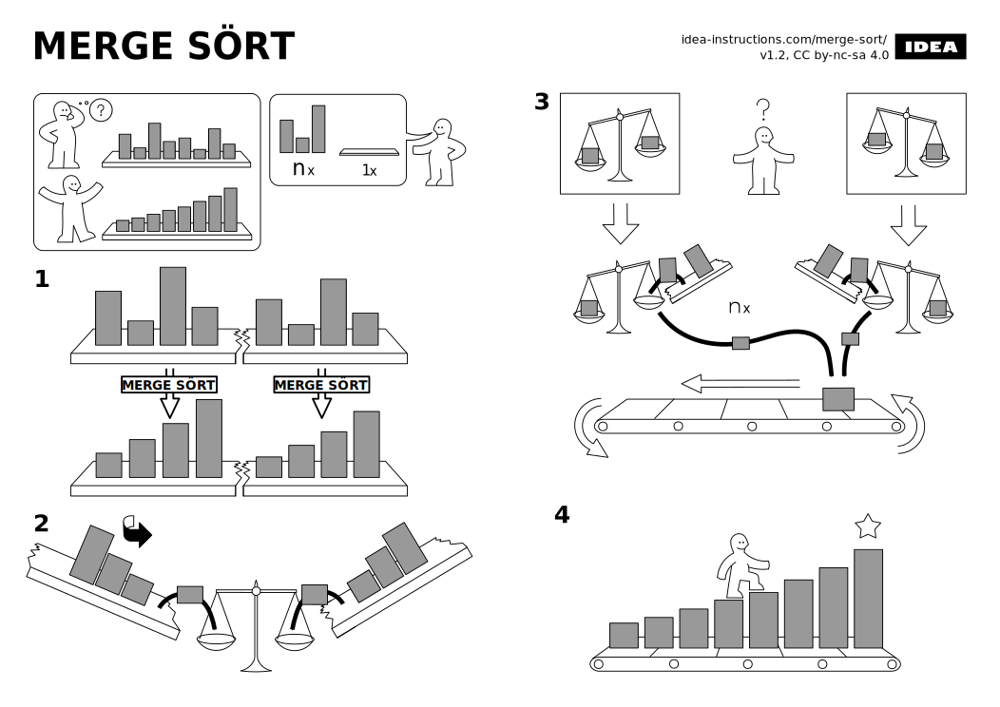

TP Tris
Vous allez travailler sur la création d'algorithmes de tris :
- cette semaine, vous travaillerez sur les exercices 1 à 4 (et les remettrez sur Moodle avant le prochain TP) ;
- la semaine prochaine, vous travaillerez sur les exercices 5 et 6.

Exercice 1 : Tri par sélection
Question 1
Dans la classe Sort, codez la méthodeechanger(int[] tab, int i, int j), qui échange les éléments d'indices i et j dans le tableau tab. Les tests dans
testEchanger()doivent passer.
Question 2
Préparez les tests unitaires de la méthodetriParSelection(int[] tab)dans la méthode
testTriParSelection().
Question 3
Implémentez la méthodetriParSelection(int[] tab)à partir de l'algorithme vu en TD.
Exercice 2 : Tri à bulle
Question 1
Préparez les tests unitaires de la méthodetriABulle(int[] tab)dans la méthode
testTriABulle().
Question 2
Implémentez la méthodetriABulle(int[] tab)à partir de l'algorithme vu en TD.
Exercice 3 : Comparaison des algorithmes de tri
Nous allons maintenant comparer les algorithmes de tris, pour estimer lequel est le plus rapide. Pour cela nous vous fournissons le fichier
Benchmark.java, qui permet de lancer les différents algorithmes de tri sur des tableaux remplis aléatoirement. Les algorithmes sont lancés sur des tableaux ayant des tailles variant de 10000 à 90000 entiers (voir la variable tailleMax).
Question 1
- Faîtes tourner ce benchmark, en utilisant la méthode
testBench()
deBenchmarkTest.java
. Cela va lancer les tests, et écrire les temps d’exécution dans un fichier benchmark.txt. - Placez-vous dans le répertoire tris/.
- Vérifiez que le fichier benchmark.txt a bien été généré.
- Lancez la commande suivante :
gnuplot tris.plt
. -
Cela va générer une image tris.svg, que vous pouvez par exemple ouvrir via la commande
eog tris.svg
.

Seuls les tris que vous avez implémentés sont représentés pour l’instant, ainsi que le tri par défaut de Java (via la méthodeArrays.sort()). Interprétez ce graphique : quel est le tri le plus rapide ? Pourquoi ? Comparez les temps de calcul du tri par sélection pour 40000 et 80000 éléments pour les tris par sélection et à bulle : est-ce le double ? Pourquoi ?
Exercice 4 : Tri par comptage
Le tri par comptage fonctionne de la manière suivante. À chaque case du tableau tab à trier, on associe un compteur. Ces compteurs sont initialisés à zéro, puis modifiés de la manière suivante. Pour chaque case i, on parcourt toutes les cases j strictement inférieures à i :
- si la case j du tableau est strictement inférieure à la case i, le compteur associé à la case i est incrémenté,
- sinon, le compteur associé à la case j est incrémenté.
Voici un exemple. On veut trier le tableau tab suivant : {3, 1, 3, 2}.
Initialement, on a la situation suivante :| tab | 3 | 1 | 3 | 2 |
| Compteurs | 0 | 0 | 0 | 0 |
- [Pour i=0,] on compare tab[0] à ses prédécesseurs j < i. Il n'y en a aucun, donc rien à faire.
- [Pour i=1,] on compare tab[1] à ses prédécesseurs j < i :
- pour j=0, on a tab[j] > tab[i] donc on incrémente le compteur de j.
tab 3 1 3 2 Compteurs 1 0 0 0 - [Pour i=2,] on compare tab[2] à ses prédécesseurs j < i
- pour j=0, on a tab[j] = tab[i] donc on incrémente le compteur de j.
- pour j=1, on a tab[j] < tab[i] donc on incrémente le compteur de i.
tab 3 1 3 2 Compteurs 2 0 1 0 - [Pour i=3,] on compare tab[2] à ses prédécesseurs j < i
- pour j=0, on a tab[j] > tab[i] donc on incrémente le compteur de j.
- pour j=1, on a tab[j] < tab[i] donc on incrémente le compteur de i.
- pour j=2, on a tab[j] > tab[i] donc on incrémente le compteur de j.
tab 3 1 3 2 Compteurs 3 0 2 1
Les compteurs indiquent bien les indices des cases dans le tableau trié
Question 1
- Écrire le code du tri par comptage.
- Écrivez au minimum 4 tests unitaires.
- Regénérez les courbes afin de le comparer aux autres tris. Pensez à décommenter les lignes correspondantes à ce tri dans la méthode testBench() de BenchmarkTest.
Exercice 5 : Les autres tris
Implémentez les nouveaux tris vus en TD : tri par insertion, tri fusion et tri rapide. Comparez leurs performances aux autres tris.
Une illustration du tri rapide,
façon notice Ikea (pour l'étape 1 nous choisissons le pivot au milieu du tableau, plutôt qu'aléatoirement) :

et du tri fusion :

Exercice 6 : Améliorer vos tests
Il est assez simple de vérifier que le tableau trié l'est effectivement. Par contre il est plus compliqué de tester si on retrouve toutes les valeurs du tableau d’origine.
Écrivez une fonctionmemesValeursprenant deux tableaux d’entiers en paramètres et retournant true si les deux contiennent les mêmes valeurs avec le même nombre d’occurrence, et false sinon.
Powered by w3.css